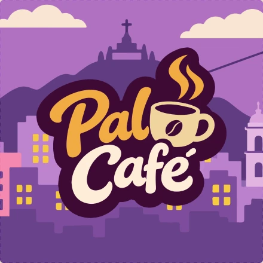
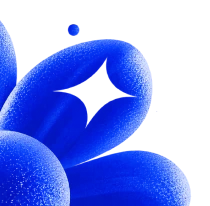
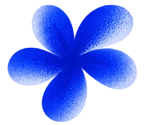
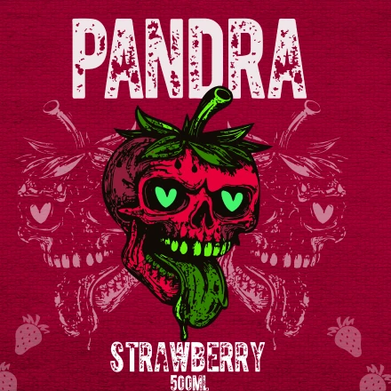
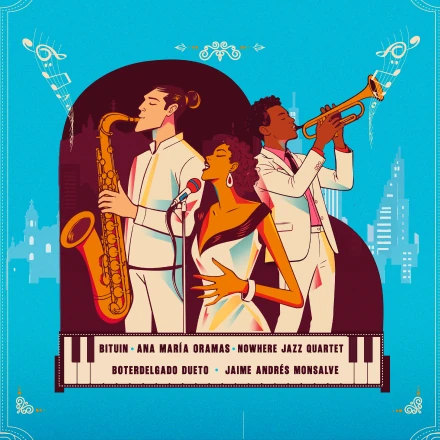
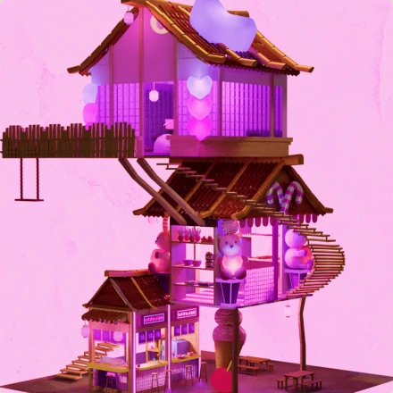

01PAL CAFÉABRIR ↗IDENTIDAD DE MARCA / ILUSTRACIÓN
[03] PROYECTOS / 01
PAL CAFÉ
Identidad de marca con una paloma como personaje, inspirada en la cultura cafetera de Bogotá.
VER PROYECTO↗


[03] PROYECTOS
Elige una carpeta para ver el trabajo.
[03] PROYECTOS / 01
Identidad de marca con una paloma como personaje, inspirada en la cultura cafetera de Bogotá.
VER PROYECTO↗
[03] PROYECTOS / 02
Exploración tridimensional de una bebida energizante: modelado 3D, materiales, texturas e iluminación.
VER PROYECTO↗
[03] PROYECTOS / 03
Campaña visual que celebra el jazz como punto de encuentro cultural en la ciudad.
VER PROYECTO↗
[03] PROYECTOS / 04
Yuki Ice Cream es un proyecto de diseño 3D que propone una heladería inspirada en la arquitectura japonesa. A través de Blender, se creó un espacio de libre exploración que combina elementos tradicionales, fantasía y tonos pastel para ofrecer una experiencia visual acogedora y original.
VER PROYECTO↗